What it is
One always-on-top surface pinned to the top edge of the screen. In hover mode it grows under the pointer and collapses 90 ms after the pointer leaves. Prefer a still desktop? Disable hover, use the player-only pill, and click empty pill space only when the full panel is wanted.
Notifications, incoming calls, and microphone or camera activity take the surface over on their own and hand it back when they are done. Everything is drawn in greyscale, with the sole exception of the green and red on a call's answer and decline buttons — the two controls where guessing wrong actually costs you something.
Changelog · 2026.08.09
Motion you can tune. Interaction you can choose.
This release adds a complete settings surface, four contrast-safe themes, optional hover expansion, a player-only collapsed mode, three spectrum behaviours, adjustable animation visibility, and quality-checked cached YouTube thumbnails.
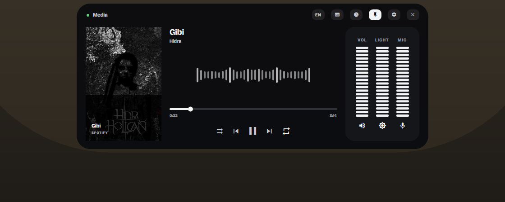
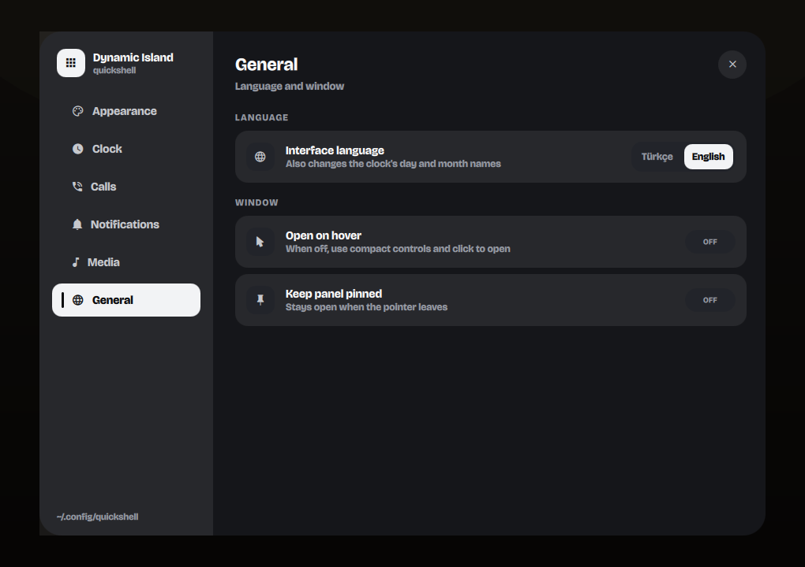
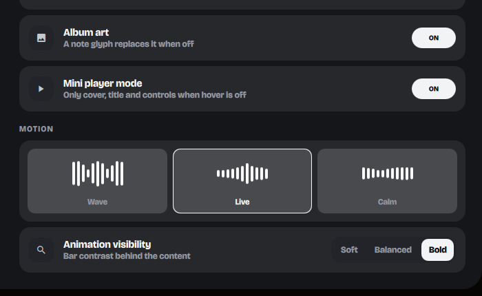
Every state
Captured live. The interface ships in English and Turkish and switches
between them at runtime — every string lives in Strings.qml,
so a third language is one branch per line away.
Collapsed
Cover, title, pixel clock, battery and the mic/camera privacy dots. The spectrum ribbon rides the top edge while something plays.
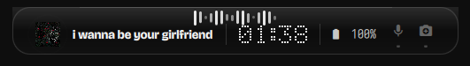
Media
Cover, scrubbing, transport and a spectrum mirrored around the centre so the low bands meet in the middle. Fed by cava.
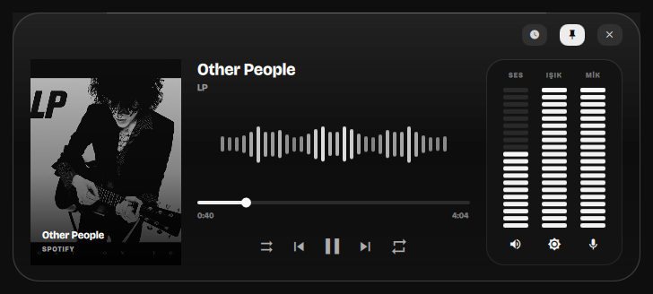
Lyrics
Time-synced lines in place of the spectrum, the sung one lit and the neighbours dimmed. The block rises by a line on each change, so it reads as a list scrolling rather than three labels blinking.
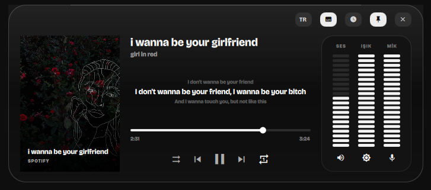
Clock
A 5×7 bitmap font drawn to a canvas over a dormant LED grid. Digits roll vertically, one pixel row at a time.
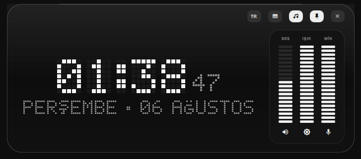
Call
An incoming call takes the whole surface, radar rings and all, then folds down to a bar with a running timer once the audio actually connects. Answer and decline invoke the app's own D-Bus actions.
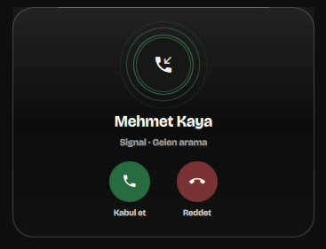
Notification
Pushed in over IPC. Uses the sender's own icon, or falls back to a freedesktop icon-name lookup.
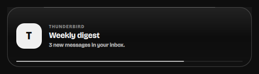
Reply
Senders that attach an inline-reply action get a field and a send button. Typing pauses the dismissal countdown, so a half-written reply is never swallowed mid-sentence.
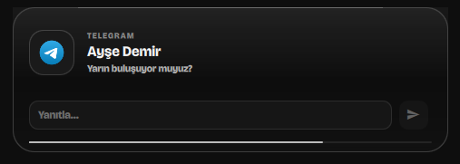
Privacy
Raised the moment the microphone or camera starts or stops. Polled at a steady rate even while collapsed.
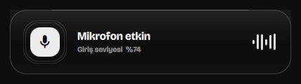
What is in it
- MPRIS media
- Cover art, scrubbing, shuffle and repeat, previous/play/next. Transport buttons apply optimistically, so the panel reacts on click instead of waiting for the next poll.
- Spectrum analyser
- Real band data from
cava, mirrored around the centre and drawn across the collapsed pill too. Live follows cava frame-for-frame; Wave and Calm reshape it and provide a synthetic fallback. - Settings and themes
- Black, Umbra, Gray and White palettes with contrast-safe text, plus live controls for clock style, language, hover behaviour, mini-player mode and animation visibility.
- Player-only pill
- Disable hover expansion and the collapsed island can keep only cover, title and previous/play/next. Clicking its empty surface opens the full panel.
- YouTube artwork
- Watch, Music, Shorts, Live, Embed and
youtu.beURLs resolve to quality-checked thumbnails. Tiny placeholders are rejected and successful images are cached locally. - Pixel-art clock
- A 5×7 glyph table rendered to a canvas, with vertical digit rolls and Turkish Ç/Ğ/İ/Ö/Ş/Ü included.
- Synced lyrics
- MPRIS has a lyrics field that essentially nothing fills in — Spotify reports it as an empty string — so lines come from LRCLIB, which needs no account or key. Fetched once per track and cached on disk, misses included, so a track without lyrics is not looked up again on every play. Nothing is fetched on the poll path.
- Calls
- An incoming call is recognised from the notification's own accept/decline actions, and answering or declining invokes those actions rather than faking input at the app. Whether a call is live is inferred from PipeWire instead — an app holding a playback and a capture stream at once is, by construction, mid-call — which is what makes the timer honest and covers calls answered on another device.
- Inline reply
- Notifications carrying an
inline-replyaction get a field and a send button, wired to the freedesktop reply signal. - English and Turkish
- Switchable from a chip in the panel or over IPC, and remembered across restarts. With no saved choice it follows
QS_ISLAND_LANG, then the session locale. Strings live in one file rather than inline, so nothing silently stays untranslated. - Device indicators
- PipeWire microphone and V4L2 camera use raise a card the moment either starts or stops.
- Meters
- Volume, brightness and microphone gain as draggable segment bars, over
wpctlandbrightnessctl. - Weather and battery
- Open-Meteo with IP geolocation, cached for fifteen minutes. Battery level, charge state and time-to-empty from sysfs and UPower.
- Stays out of the way
- Hides completely when the focused window goes fullscreen, and returns when it leaves.
Install
$ git clone https://github.com/lunanoir21/quickshell-dynamic-island.git $ cd quickshell-dynamic-island $ chmod +x backend.sh $ quickshell -p ./Main.qml # or drop it into an existing config and instantiate # DynamicIslandModule.DynamicIslandHost {}
Needs Quickshell 0.3+, a wlroots compositor with layer-shell, jq
and a Nerd Font. playerctl, wpctl,
brightnessctl, cava, curl (weather,
lyrics and browser thumbnails), pactl (call detection) and upower are all
optional — anything missing leaves its section empty rather than failing.
Two rules it is built on
Looping animations never bind straight to a visual property.
Each one drives a resettable number and returns it to a known resting value
when it stops. Writing SequentialAnimation on opacity with
infinite loops freezes the property wherever the loop happened to be when
its condition went false, which leaves half-faded rings and stalled bars on
screen.
A Behavior is only for smoothing discrete input.
It smooths cava's 30 Hz samples. Put one on a value that already changes
every frame and it just retargets the animation before it can go anywhere,
flattening the spectrum into a motionless row of stubs.